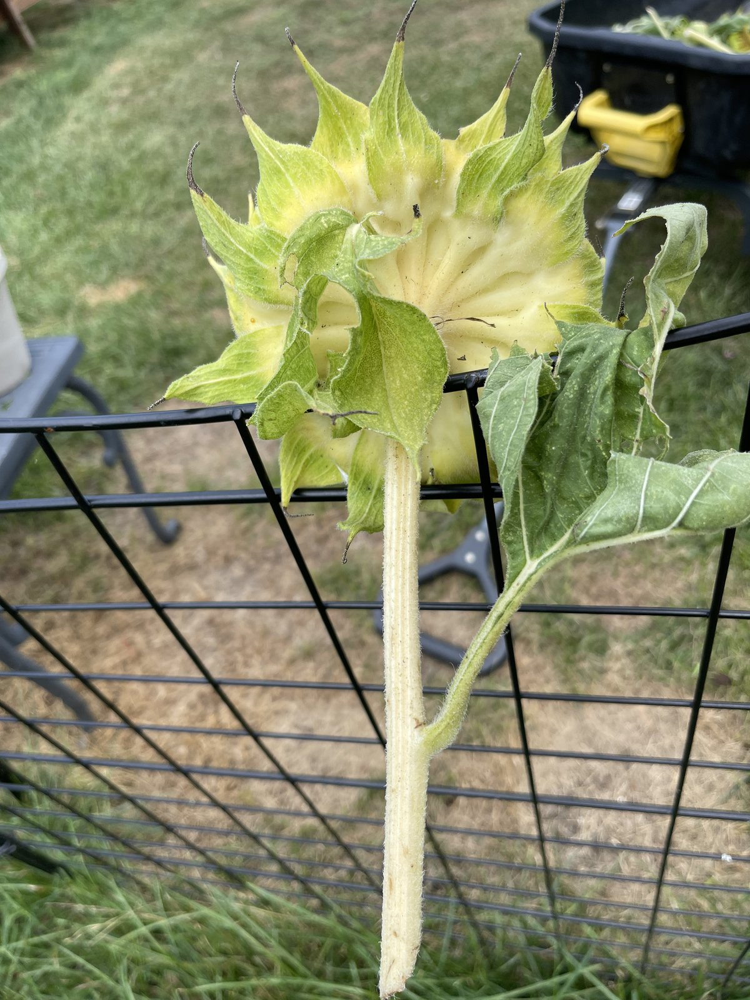

Step zero
Turn the head over
Everything about timing happens on the back. Grab the head, tip it toward you, and look at the disc of green behind the petals.
The one thing to do
Ignore the petals. Turn the head over and look at the back. Green means wait. Yellow-brown with dry brown bracts means go.
Ready to cut
- The back of the head has gone from green to lemon yellow, then to yellow-brown.
- The bracts, those pointed leaves ringing the back, are brown and papery.
- The petals have withered and mostly fallen off.
- The tiny florets on the face have shriveled up and gone crusty.
- The head is bowed over and heavy.
- Seeds are plump, hard, and striped. A few come loose when you rub a thumb across them.
Not yet
- The back is still green, even pale green.
- Bracts are still soft and green at the base.
- Seeds are flat, soft, or pale gray with no stripe.
- Seeds sit tight and nothing comes loose under your thumb.
- The face still has yellow florets standing up on it.

🌻Back of a ready head: yellow-brown, bracts dry and brown
img/sun-01-ready.jpg
🌱Back of a head that is still green
img/sun-02-not-ready.jpgRoughly, this lands 30 to 45 days after the flower opens. Use that as a rough calendar, never as the decision. Weather moves it by a week in either direction.

🌻Face of a ripe head: shriveled florets, striped seeds showing
img/sun-03-face.jpg